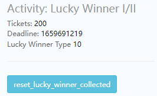

lucky winner
[注意]：修改数据时一定要修改正确后再登录

[Tickets]：彩票数量
[Deadline]：活动倒计时
[Lucky Winner type]：对应某个 Lucky Winner 活动的值
[reset_lucky_winner_collected]：清除Lucky Winner活动的中奖状态
登录收奖
- 配上活动
- 完成购买得到
tickets - 下线
- 联系后端发奖
- 修改数据
- （
Activity: Lucky Winner I/II的[Deadline]修改为当前时间） - 点击
[set First login today]按钮
- （
- 下掉活动（等待约30s，活动配置完全刷新）
- 登录
跨天在线收奖
- 配上活动
- 完成购买得到tickets
- 下线
- 联系后端发奖
- 修改数据 （
Activity: Lucky Winner I/II的[Deadline]修改为当前时间） - 登录
- 下掉活动（最多等待约30s，活动配置完全刷新）
- 点击 Admin 上
[set today begin]按钮
服务器发奖后，活动中心会展示Lucky Winner活动的中奖状态！
点击 Activity: Lucky Winner I/II 的[reset_lucky_winner_collected] 可以清除活动中心的中奖状态显示